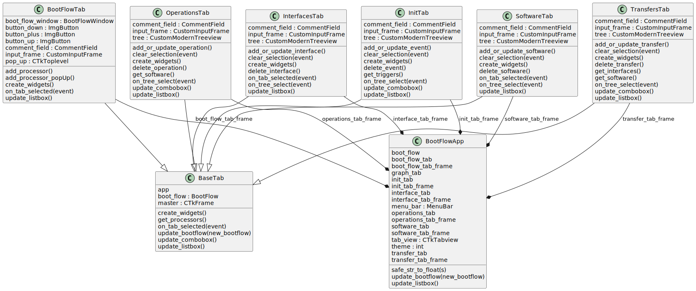

src.ui package
Class Diagram
{kind=link}
Subpackages
Submodules
src.ui.boot_flow_app module
- class src.ui.boot_flow_app.BootFlowApp(boot_flow)[source]
Bases:
CTkA class representing the main application window for the BootFlow Manager. This application manages the boot flow configuration and allows users to interact with various aspects of the boot flow through different tabs.
Attributes:
- themeint
The current theme of the application. 0 for Dark mode, 1 for Light mode.
- boot_flowBootFlow
An instance of BootFlow that manages the application’s boot flow data.
- tab_viewctk.CTkTabview
A tab view widget that holds various tabs for different functionalities.
- boot_flow_tab_frameBootFlowTab
The tab for managing and displaying boot flow configurations.
- software_tab_frameSoftwareTab
The tab for managing and displaying software configurations.
- init_tab_frameInitTab
The tab for managing and displaying initialisation configurations.
- interface_tab_frameInterfacesTab
The tab for managing and displaying interface configurations.
- transfer_tab_frameTransfersTab
The tab for managing and displaying program transfer events.
- operations_tab_frameOperationsTab
The tab for managing and displaying operations configurations.
- menu_barMenuBar
The menu bar for the application, providing access to various functions.
- safe_str_to_float(s)[source]
Converts a string to a float, returning the original string if conversion fails.
Parameters:
- sstr
The string to be converted to a float.
Returns:
- float or str
The converted float value if successful, otherwise the original string.
Module contents
UI components for the BootFlow application.